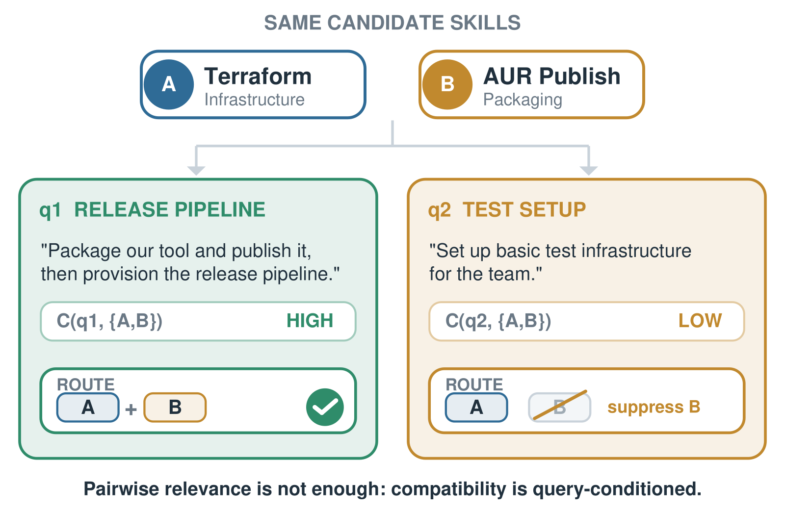
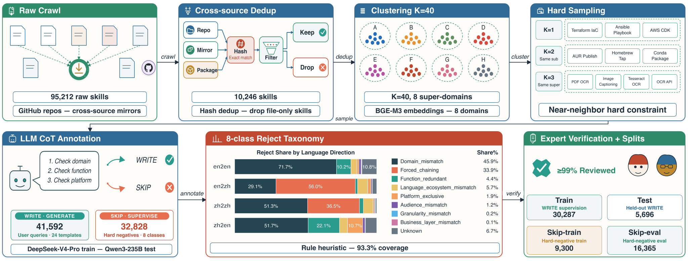
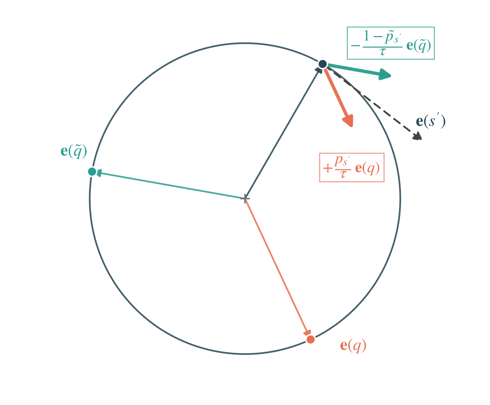

目录 · 8 节
1它到底在解决什么问题？2数据怎么造：拒绝记录从哪里来3新指标 Set-Compat：整组都要排在最前面4两阶段模型：召回负责找全，重排负责挑对组合5实验：哪些结论站得住6我认为它的局限7一个推荐/搜索团队可以怎么试8一句话结论和评价分享 SHARE
做 agent 工具路由、skill 检索或者多路召回组合的人值得读这篇。它把一个常被忽略的事实讲清楚了：给 agent 召回 skill 时，单个 skill 相关还不够，召回的几个 skill 还得能在当前请求里一起用。论文的核心思想一句话：用大模型合成训练 query 时，模型会先拒掉一批“凑不成自然需求”的 skill 组合（论文叫 SKIP），这些拒绝记录平时被丢掉，作者把它们留下来，只交给 cross-encoder 重排模型去学，不交给双塔召回模型。在作者自建的 R3-Skill 基准上，重排后“整组 skill 都排进前几位”的比例从 28.12% 提到 33.27%；同样的拒绝记录如果当成双塔的难负样本，这个比例反而从 28.12% 掉到 21.58%。只有 0.6B 的召回模型 Hit@1 达到 72.07%，比 8B 的通用 embedding 模型高出近 10 个点。
它到底在解决什么问题？
先说 skill 是什么。它是一份可复用的能力说明，包含名字、简介和一段很长的正文（操作步骤、API 约束、示例代码），agent 读到它就知道怎么完成一类任务。R3-Skill 的 1 万多个 skill 合计 2,120 万 token，最长的一个有 31,571 个 token，不可能全部塞进 prompt，所以需要一个路由层先挑出少数几个。
难点在于，skill 召回回来是要被执行的，不只是被阅读。论文图 1 用了一个例子，我沿用它贯穿全文：
| query | 需要的 skill | 示意的正确结果 |
|---|---|---|
| q1：“把我们的工具打包发布，然后搭好发布流水线” | Terraform 基础设施 + AUR 打包发布 | 两个都要，缺一不可 |
| q2：“给团队搭一套基础测试环境” | 只要 Terraform 基础设施 | AUR 打包发布应该压下去 |
表里的 AUR（Arch Linux 的社区软件仓库）打包发布，负责把软件打包上传到这个仓库。两个 query 下，它和 query 的文本相关度都不低。如果只按单个 skill 的相关度排序，q2 的前两位很可能是 Terraform 加 AUR 打包，agent 会被塞进一段用不上的指令。文档检索里多返回一篇相关文章通常无害，skill 路由里多返回一个就可能带来冗余或冲突的指令。

作者把这件事写成一个分解：整组 skill 都进前 K 的概率，约等于每个 skill 各自进前 K 的概率之积，再乘一个跟 query 有关的兼容性修正项 。 是这个 query 真正需要的 skill 集合。 恒等于 1 时，就退回到“各 skill 独立判断相关”的普通检索。这篇论文要补的，就是这个修正项的监督信号。
数据怎么造：拒绝记录从哪里来
整体流程见论文图 3：从 GitHub 爬 skill、去重、聚类、按近邻抽组合、让大模型判断写不写 query、专家复核、切分训练和测试。

为什么要按近邻抽组合？随机抽两个 skill，比如游戏联机加法律文书，一眼就知道凑不到一起，这种拒绝没有信息量。作者先用 BGE-M3 给 skill 算 embedding，用 KMeans 聚成 40 个子簇，再合并成 8 个大领域。两个 skill 的组合从同一个子簇里抽，三个 skill 的组合从同一个大领域里抽。这样抽出来的组合主题都很接近，但大模型仍然只接受了 56.3% 的两 skill 组合和 36.5% 的三 skill 组合。这说明主题相近远不等于能凑成一个自然的任务。
抽好组合后，大模型分两步输出。第一步判断这几个 skill 是否会被一个用户在同一段需求里自然地同时提出，标准是缺一不可、不是硬凑、现实中真有人这么问。判断为 WRITE（写出 query），就按六种用户口吻之一写一条 50 到 300 词（或字）的 query，并且不许出现 skill 的名字。判断为 SKIP（跳过），就写一句拒绝理由。“Code Review”和“Systematic Code Review”被拒，因为功能重叠，一个就够；“Rust 可靠性”和“Go 安全模式”被拒，因为一个请求不会同时用两种语言生态。
几个关键设置决定了这个基准能不能信：
| 设置 | 内容 | 为什么重要 |
|---|---|---|
| 规模 | 10,246 个 skill，41,592 条 WRITE query，32,828 条 SKIP | 其中 15,791 条 query 需要两到三个 skill |
| 语言方向 | en2en、en2zh、zh2en、zh2zh（skill 语言到 query 语言） | 中文 skill 只有 246 个原始条目，zh2en、zh2zh 各只有约 1,150 条 query |
| 切分 | 8,196 个训练 skill 和 2,050 个测试 skill 互不重叠 | 模型没法靠记住测试 skill 得分 |
| 生成模型 | 训练集用 DeepSeek-V4-Pro，测试集用 Qwen3-235B-A22B | 降低模型学到同一个生成器措辞的风险 |
| 人工复核 | 测试集所有多 skill 标签由 9 位专家独立复核，初始分歧低于 5% | 测试标签可信，但 query 本身仍是合成的 |
拒绝理由被归成 8 类。en2en 的拒绝 71.7% 是领域不重叠，en2zh 有 56.0% 是“硬凑”（每个 skill 单看都合理，但放进同一个请求就不自然）。后面会看到，这个差别和重排模型在两个方向上的收益对得上。
新指标 Set-Compat：整组都要排在最前面
已有的指标里，Recall@K 看前 K 位覆盖了多少比例的需要的 skill；Comp@K 沿用 SkillRet 基准的定义，按论文的描述，它看前 K 位是否凑齐了整组需要的 skill。两者都允许整组 skill 散落在前 K 位的任何位置。作者另加了 Set-Compat，只在需要两个及以上 skill 的 query 上算：需要几个 skill，就看前几位；前几位恰好包含全部需要的 skill 才记 1，否则记 0。
是模型对 query 给出的排序， 是条件成立时取 1 的指示函数。用 q1 手算一下（示意）：需要的是 Terraform 和 AUR 打包两个 skill，就只看前 2 位。排序是 Terraform、AUR 打包、Ansible，记 1；排序是 Terraform、Ansible、AUR 打包，Recall@3 仍是满分，但 Set-Compat 记 0。
为什么要这么严？agent 通常只加载最前面的几个 skill，多加一个就多占一段上下文，还可能带进冲突的指令。整组 skill 要到第 10 位以后才凑齐，Recall@15 看起来很好，对 agent 却没什么用。
两阶段模型：召回负责找全，重排负责挑对组合
R3 是常见的召回加重排结构。召回模型 R3-Embedding 从 Qwen3-Embedding-0.6B 初始化，从整个 skill 库里取 20 个候选；重排模型 R3-Reranker 从 Qwen3-Reranker-0.6B 初始化，对这 20 个重新打分。设计上的分工很明确：拒绝信号只进重排，不进召回。下面拆开讲。
召回：同一条 query 的几个正样本不能互当负样本
双塔训练常用 InfoNCE：一个 query 配一个正样本，batch 里其他 query 的正样本当负样本。多 skill query 有个坑。q1 需要 Terraform 和 AUR 打包两个 skill，如果这一步只把 Terraform 当正样本，而 AUR 打包恰好作为别的 query 的正样本出现在同一个 batch，它就会被当成 q1 的负样本推远。
作者的做法分两部分。主项照常算 InfoNCE，但把同一 query 的其他正样本（论文叫 sibling，即兄弟正样本）从分母里拿掉。另加一项，让每个兄弟正样本各自和负样本比一次，把 query 也往它们拉近：
是去掉兄弟正样本后的 InfoNCE， 是兄弟正样本的平均对比损失，，温度 。单 skill query 没有兄弟正样本，这个损失就退回标准 InfoNCE。难负样本用 Qwen3-Embedding-8B 离线挖：取它排在第 20 到 50 位、余弦相似度低于 0.85 的 skill。相似度设上限，是为了避免把其实也相关的 skill 当成负样本。
重排：拒绝伙伴拿 1 分，正确答案拿 3 分
重排训练还要用到被拒的组合。对每条 WRITE query，作者从它的正确 skill 所在的同一个聚类近邻区域里，取在被拒组合中出现过的 skill，叫它们 SKIP 伙伴。原文给出的挑选条件只有这两条：和正确 skill 同在一个近邻区域，并且出现在某个被拒组合里；并不要求它恰好和这条 query 的正确 skill 组成过被拒组合。它们和正确 skill 主题很接近，但被判过不该一起用。重排训练时，一个列表放 10 个候选：真正需要的 skill、SKIP 伙伴，以及 R3-Embedding 排在前面的其他候选。打分规则是需要的 skill 记 3，SKIP 伙伴记 1，其他记 0，再用 ListNet 训练：把这些分数做 softmax 当目标分布，让模型打分的 softmax 去逼近它。
手算一个列表（示意）：2 个需要的 skill、2 个 SKIP 伙伴、6 个普通候选。，，，总和约 51.6。目标分布里，每个需要的 skill 约占 0.39，每个 SKIP 伙伴约 0.053，每个普通候选约 0.019。
这组数字说明一个容易误解的地方：SKIP 伙伴在训练里不是最差的负样本，而是排在正确答案之下、普通候选之上。这和 SKIP 的含义一致：它不是说这个 skill 不相关，只是说它在这个组合里不该一起出现。
为什么拒绝信号不能进双塔？
双塔给每个 skill 只算一个向量，所有 query 共用。以 AUR 打包为例：它在 q2 下是 SKIP 伙伴，InfoNCE 会把它的向量从 q2 推开；它在 q1 下是正样本，又会被拉向 q1。同一个向量要同时满足这两个方向，最后停在两股力量的折中点上，任何一条 query 的推开效果都被别的 query 的拉近抵消一部分。cross-encoder 没有这个问题，它每次把 query 和 skill 拼在一起重新计算，q1 下给 AUR 打包高分、q2 下给低分，彼此不冲突。

作者在附录里还分析了另外三种把 SKIP 放进双塔的损失写法，结论是都不如 InfoNCE。举一个：直接惩罚两个 skill 向量相似度的 BCE 损失，梯度方向和 query 无关，会让 Terraform 和 AUR 打包在所有 query 下都互相远离，连 q1 这种需要两者一起用的 query 也受影响。这部分只有推导，没有实验数字。
实验：哪些结论站得住
主结果在 R3-Skill 测试集上，重排都用同一份 R3-Embedding 前 20 候选（论文表 4，节选，单位 %）：
| 模型 | Hit@1 | NDCG@10 | Recall@5 | Recall@10 | Set-Compat |
|---|---|---|---|---|---|
| BM25 | 6.04 | 8.82 | 9.93 | 12.41 | 0.40 |
| Qwen3-Embedding-8B（未微调） | 62.29 | 73.01 | 79.13 | 84.98 | 10.69 |
| SkillRet-Embedding-0.6B | 46.72 | 58.04 | 64.47 | 71.01 | 11.88 |
| R3-Embedding（0.6B） | 72.07 | 81.60 | 87.22 | 91.77 | 28.12 |
| + Qwen3-Reranker-0.6B | 68.08 | 79.54 | 86.45 | 92.12 | 17.82 |
| + SkillRouter-Reranker-0.6B | 67.98 | 77.65 | 82.57 | 88.77 | 24.36 |
| + R3-Reranker | 75.39 | 81.97 | 85.23 | 89.94 | 33.27 |
召回阶段，0.6B 的 R3-Embedding 比 8B 通用模型 Hit@1 高 9.78 个点，Recall@10 从 84.98% 到 91.77%。这说明针对 skill 全文和多正样本结构的训练，比把模型放大更管用。BM25 几乎完全失效，因为 query 被要求不出现 skill 名字，还有一半是跨语言的。
重排阶段，两个通用重排模型都把 Set-Compat 拉低了，Qwen3-Reranker 从 28.12% 掉到 17.82%。这说明只学“query 和单个文档是否相关”的重排模型，会把主题接近但多余的 skill 往前提，正好破坏组合。R3-Reranker 把 Hit@1 和 Set-Compat 都提上去了，代价是 Recall@5 从 87.22% 降到 85.23%，Recall@10 从 91.77% 降到 89.94%。也就是说，它把整组 skill 往前挪时，会把个别正确 skill 挤到后面。
关键的消融在论文表 7（单位 %）：
| 配置 | 改了什么 | Hit@1 | Set-Compat |
|---|---|---|---|
| A 召回 | 用 8B 模型挖的难负样本（上线版本） | 72.07 | 28.12 |
| B 召回 | 有 SKIP 伙伴时用它替换难负样本 | 69.93 | 21.58 |
| C 重排 | 不放 SKIP 伙伴 | 72.31 | 29.50 |
| D 重排 | 放 SKIP 伙伴，但随机配给别的 query | 75.11 | 29.70 |
| E 重排 | 放 SKIP 伙伴，按原 query 配对（上线版本） | 75.39 | 33.27 |
A 和 B 对比，说明 SKIP 当双塔负样本确实有害，和前面的推导一致。C、D、E 三行能把重排的收益拆开。从 C 到 D，Hit@1 提了约 2.8 个点，Set-Compat 几乎不动，这部分来自列表里多了一批难候选，跟配对对不对无关。D 和 E 的区别只在于 SKIP 伙伴放进哪条 query 的列表：E 放回挑出它的那条 WRITE query，也就是和它的正确 skill 同在一个近邻区域的那条；D 把同一批 SKIP 伙伴打乱后配给别的 query，并让 D 和 E 在语言方向、需要的 skill 数、候选相似度分布、skill 长度和训练中出现的次数上保持一致，所以两者唯一的差别就是配对对不对。从 D 到 E，Hit@1 只多 0.28 个点，Set-Compat 却多了 3.57 个点。这说明SKIP 伙伴只有和对应的 query 放在一起才教得会整组排序，放错了就只是一个普通的难候选。我按表 7 算了一下：R3-Embedding 到 E 的 5.15 个点 Set-Compat 提升里，约 3.6 个点来自正确配对，重排训练本身只贡献约 1.4 个点。
分语言方向的结果（论文表 5）也支持这个解释。en2zh 的拒绝多是“硬凑”，重排把它的 Set-Compat 从 18.97% 提到 25.64%，多 6.67 个点；en2en 的拒绝多是领域不重叠，双塔本身就能拉开距离，重排只多 3.46 个点。
迁移实验放在另一个独立构建的英文基准 SkillRet 上，它没有任何拒绝标注。R3-Embedding 的 NDCG@10 是 81.06%，比在 SkillRet 自己数据上训练的 SkillRet-Embedding 高 3.03 个点；加上 R3-Reranker 后到 83.87%，九个指标全部提升。通用 Qwen3 重排模型在这里同样拉低了所有 NDCG。这说明 R3-Reranker 学到的东西不只适用于自家基准。
我认为它的局限
第一，Set-Compat 绝对值仍然很低，而且小方向的数字不可靠。最好的系统也只有 33.27%，也就是三分之二的多 skill query，前几位凑不齐整组 skill。zh2en 从 45.45% 到 63.64%、zh2zh 从 50.00% 到 60.00% 这类数字，看起来像是十来条样本上的比例（这是我从数值反推的），作者自己也只把它们当参考。
第二，“该不该一起用”是大模型判的，不是执行结果。SKIP 来自 DeepSeek-V4-Pro 的一次判断，测试标签由专家复核，但没有任何实验让 agent 真的执行这些 skill，看少召回或多召回一个会不会让任务失败。query 也全是合成的，作者自己的泄漏审计显示 en2en 有 7.8% 的 query 包含 skill 名字的子串。
第三，重排换来 Set-Compat，牺牲了前几位的覆盖。Recall@5 降了约 2 个点，Comp@5 从 85.31% 降到 83.41%。如果下游 agent 能稳定加载 5 个以上 skill，单用 R3-Embedding 反而更合适，作者也这么建议。
一个推荐/搜索团队可以怎么试
- 先查自己的合成数据流水线有没有在丢拒绝记录。很多团队用大模型造 query 时，会让模型先判断组合是否合理；把 SKIP 和理由存下来，几乎没有额外成本。
- 在离线评测里加 Set-Compat，只算需要多个工具或多个结果的 query。如果现有重排模型让这个指标比纯召回还低，就说明它在把主题相近但多余的候选往前提，和论文里通用重排模型的表现一样。
- 重排训练用分级标签，正确答案、拒绝伙伴、普通候选分三档，先照抄论文的 3、1、0。同时跑一组“拒绝伙伴随机配给别的 query”的对照，确认收益来自配对，而不只是多了难候选。
- 不要把拒绝记录直接当双塔的难负样本。论文的 B 组已经给出反例；双塔继续用离线挖的难负样本，并处理好多正样本之间互当负样本的问题。
一句话结论和评价
这篇最有用的启发是：合成数据时模型说“这几个不该放在一起”，是一种依赖 query 的监督，只能交给能同时看到 query 和候选的模型去学。
| 维度 | 评价 |
|---|---|
| 问题重要性 | 高。skill 和工具库越来越大，召回一组能一起用的 skill 是 agent 的前置环节 |
| 方法创新性 | 中。召回和重排都是常规结构，新意在保留拒绝记录，以及用消融说清它该放在哪一阶段 |
| 实验证据 | 中高。表 7 的 C、D、E 对照设计得干净，还有跨基准迁移；但 query 是合成的，没有端到端执行 |
| 工程成本 | 低。两个 0.6B 模型；重排 20 个候选每次请求最多约 9.2 万输入 token，对全库打分约 4,720 万 |
| 是否值得尝试 | 值得。已经在用大模型合成训练数据的团队，几乎零成本就能拿到这份信号 |
| 适用场景 | agent skill 和工具路由，以及一次要返回一组互补结果的检索 |
读完这篇，你觉得
夜读鸮记下了，谢谢你的反馈。
点一下即可，无需登录；再点一次撤回。只统计匿名次数，不记录你是谁。
讨论
欢迎补充实验细节、复现经验或不同看法。需 GitHub 登录。
正在加载讨论…